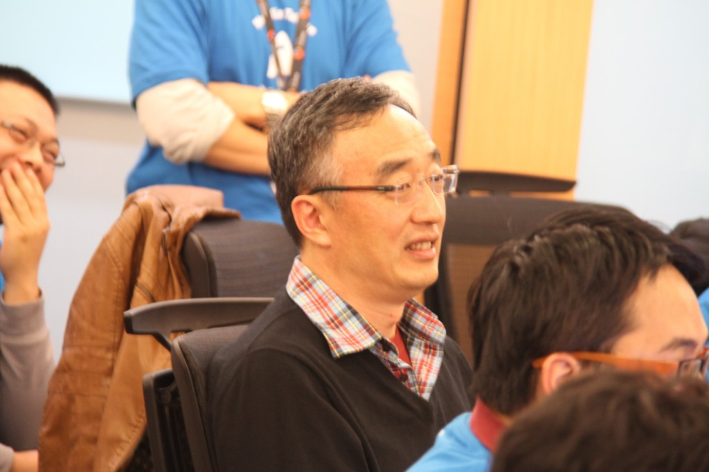
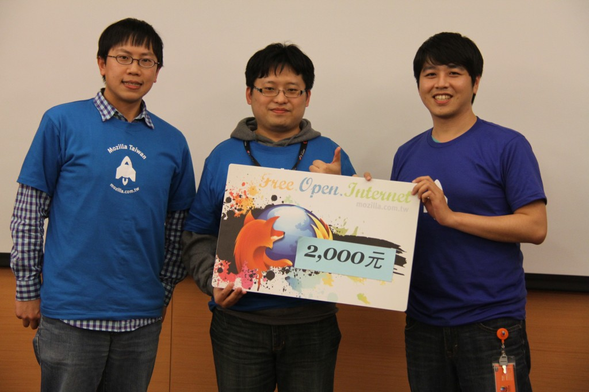

本月最夯！首度與全球 24 個國家及地區同步舉行的行動 App 開發日已順利在 1 月 26 日圓滿結束！活動從一開始的報名狀況就十分火熱，預設的 30 報名人次不到兩天就一掃而空，在緊急加開人數與活動現場空間的考量下，活動採提案遴選制，活動總報名共 90 人，而當天現場共有 43 名開發者出席。一整天的內容非常精彩，到底有多豐富？讓我們跟著活動花絮看下去！
上午 9:30 報到結束，活動準備開始囉！

活動正式開始，主持人開場並介紹由 Firefox OS 開發工程師組成，陣容強大的 Mentor 群~ 準備開始認自己的 Mentor 囉！
{kind=link}
來看看 App Days 特製影片，你想要哪一種 Web？
首先，是由開發工程師 Tim 帶來的精彩演講：認識 Firefox OS 和認識 Firefox OS 模擬器

參賽者與講師間的問答互動！

在短暫的休息過後緊接著第二場演講，由工程師 Kan-Ru Chen（ 講題：Apps Marketplace）、Evelyn Hung （Web APIs）以及 Yuren Ju (開發者工具＆ Web App 範本）用接力賽的方式為在場的參賽者演講，為下午的開發實作做準備。


{kind=link}
{kind=link}


在中午一小時的休息後，下午是實作與 Demo 的時間，各組皆有開發工程師做 Mentor 協助，現場更貼心準備音樂、飲料、零料、咖啡、下午茶等糧食補給，讓開發者用腦的同時肚子也要飽飽才行！
{kind=link}


{kind=link}
在幾個小時的開發中，若開發者隨時有問題，Mentor 隨時都能提供協助。
{kind=link}
{kind=link}
在倒數的時鐘下，時間來到了 Demo 準備，登記 Demo 的組數非常踴躍，當天共有 15 組報名 Demo。

話不多說，今天重頭戲 Demo 來囉！來看看開發者們的辛苦結晶吧！（以下為各組組名以及 Demo 名稱）
第一組：航班查詢
第二組：Github Category
第三組：今天吃什麼
第六組：Throw and Hit
第七組：英文單字王
第八組：Player
第九組：Battery Fox
第十組：Fudo Note
第十一組：Firefox 火狐轟炸客
第十二組：Fire Shaking
第十四組：Say to do
第十五組：Fireroom
第十七組：When Arrival 何時到
第十八組：Shiori
第十九組：voietube


現場還有遠從日本來的朋友，特別飛來參加台灣的 Firefox OS App Days
{kind=link}
Mozilla Taiwan 大家長宮力博士也在場與參賽者同樂~ 
{kind=link}
緊張的投票時間來了，本次採參賽隊伍互評，再加上 12 位工程師一同投票選出~


頒獎時間：恭喜兩名同列第三名 
第三組：今天吃什麼＆第十組：Fudo Note
{kind=link}
頒獎時間：恭喜第二名的隊伍
第九組：Battery Fox

頒獎時間：恭喜第一名
第十七組：When Arrival 何時到

感謝所有參與 Firefox OS App Days 的參賽者與工作人員，活動成功落幕！本次活動共 Demo 了 15 個極具創意與高完成度的作品，其中的 3 個 App 成功傳上 Marketplace，我們期待下一次的 App Days 活動，相信很快我們就會再見面囉！
{kind=link}
欲詳全部的活動照片請到：flickr.com/photos/mozillataiwan/